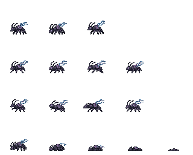
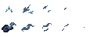

먹결 정찰개미 모션
그림자 이자형 먹결 정찰개미의 청회색 안개 꼬리와 낮은 자세를 살렸습니다.
모션 재생
특성 시연에서는 대기 후 왼쪽으로 질주하고, 첫 물기 뒤 같은 보행 프레임을 더 느리게 재생합니다. 감속 표현은 시연용입니다. 대기·질주는 반복하고 물기·사망은 한 번씩 재생합니다.
투명 스프라이트 시트



그림자 이자형 먹결 정찰개미의 청회색 안개 꼬리와 낮은 자세를 살렸습니다.
특성 시연에서는 대기 후 왼쪽으로 질주하고, 첫 물기 뒤 같은 보행 프레임을 더 느리게 재생합니다. 감속 표현은 시연용입니다. 대기·질주는 반복하고 물기·사망은 한 번씩 재생합니다.

